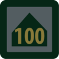
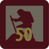
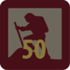

Multiple Section Badges



Camper Award Badge
The Camper Award Badge depicts the total number of nights spent camping while on approved Scouting activities. (School camps and family holidays don't count.) They may be worn above the pocket of the uniform below the World Badge.
The requirements for the badge can be started at the Joey Scout level and continue to be added through to the Rover Scout section. The number of nights camped can be recorded on Scout Central. Some Record Books also have space to record camps.
- Each youth member should commence and maintain their personal log which details the number of nights spent camping and distance covered in hiking/canoeing etc.
- This is an ongoing tally that progresses through all Sections. When a youth member links to the next section, they just keep adding the nights to their log.
- Approval for the badge is via the method of approval for other badges for the section e.g. Leader for Joey Scouts and Cub Scouts or Troop, Unit and Crew Council.
- When a new badge is earned, it replaces the previous badge. Only one badge is to be worn at a time. Once you have reached the maximum number of nights on the highest badge we have, you keep wearing that badge.


 


Walkabout Award Badge
The Walkabout Award Badge is earned for the total kilometres travelled under human power through a youth member's time in Scouting. The minimum distance to be counted toward the tally for Joey Scouts and Cub Scouts is 1km while it is 5kms for all others. Journeys taken in a canoe, kayak, skis or a bicycle are divided by 2 e.g. a 20 km bike hike earns 10 km to the Award. Day and overnight journeys provided they are over the minimum distance for the section, may be included for the Award. The badge may be worn above the pocket of the uniform below the World Badge.
The requirements for the badge can be started at the Joey Scout level and continue to be added through to the Rover Scout section. These can be recorded on the Scout Central register sheet by your leaders. Some Record Books also have a personal log section.
- Each youth member should commence and maintain their personal log which details the number of nights spent camping and distance covered in hiking/canoeing etc.
- This is an ongoing tally that progresses through all sections. When a youth member links to the next section, they just keep adding the nights to their log.
- Approval for the badge is via the method of approval for other badges for the section e.g. Leader for Joey Scouts and Cub Scouts or Troop, Unit and Crew Council.
- When a new badge is earned, it replaces the previous badge. Only one badge is to be worn at a time. Once you have reached the highest number of kilometres that we have a badge for, you keep wearing that badge.
Messengers of Peace
Joey Scout
Joey Scouts do good turns and help others because it is part of the Joey Scout Promise and Law. It is nice to help others, even if it is only a small action. Whenever we are kind to people we send a message of love and peace, making a difference to the others and also ourselves.
Requirements:
- Learn about the Messengers of Peace initiative in a Scout meeting or online.
- Participate in a good turn for your community
Cub Scout
Cub Scouts do good turns and help others because it is part of the Cub Scout Promise and Law. It is also because it is nice to help others and to make a difference, even if it is only a small action. Whenever we are kind to people we send a message of love and peace, making a difference to the recipients and also ourselves. It just feels good.
Requirements:
- Learn about the Messengers of Peace initiative in a Scout meeting or online.
- Participate in a Messengers of Peace community engagement activity organised in your Six.
- Share your actions online with the help of an adult at scout.org
Scout
Scouts do good turns and help others because it is part of the Scout Promise and Law. It is also because it is nice to help others and to make a difference, even if it is only a small action. Whenever we are kind to people we send a message of love and peace, making a difference to the recipients and also ourselves. It just feels good.
Requirements:
- Learn about the Messengers of Peace initiative in a Scout meeting or online.
- Participate in a community involvement action organised together with your Patrol.
- Share your actions online at scout.org